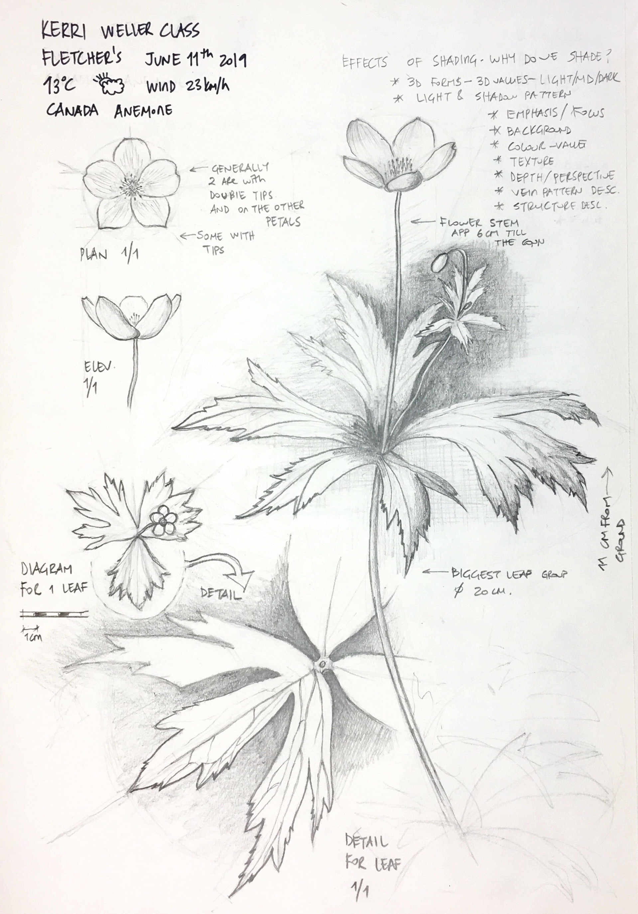

All Posts

Yellow and Purple
It is not only a matter of learning the techniques but also a matter of time and patience. Colour mixing in botanical art is about understanding the subtle relationships between warm and cool tones…

It Is Not Easy to Be Green
When you are admiring botanical art, lovely pink and purple flowers attract your attention first. But painting convincing greens is one of the hardest challenges in botanical watercolour…

How to Keep a Sketchbook
I always find it so hard to keep a sketchbook. But all of them look so lovely… I want to have one badly. Each time I start one I feel motivated and inspired, and then life happens…